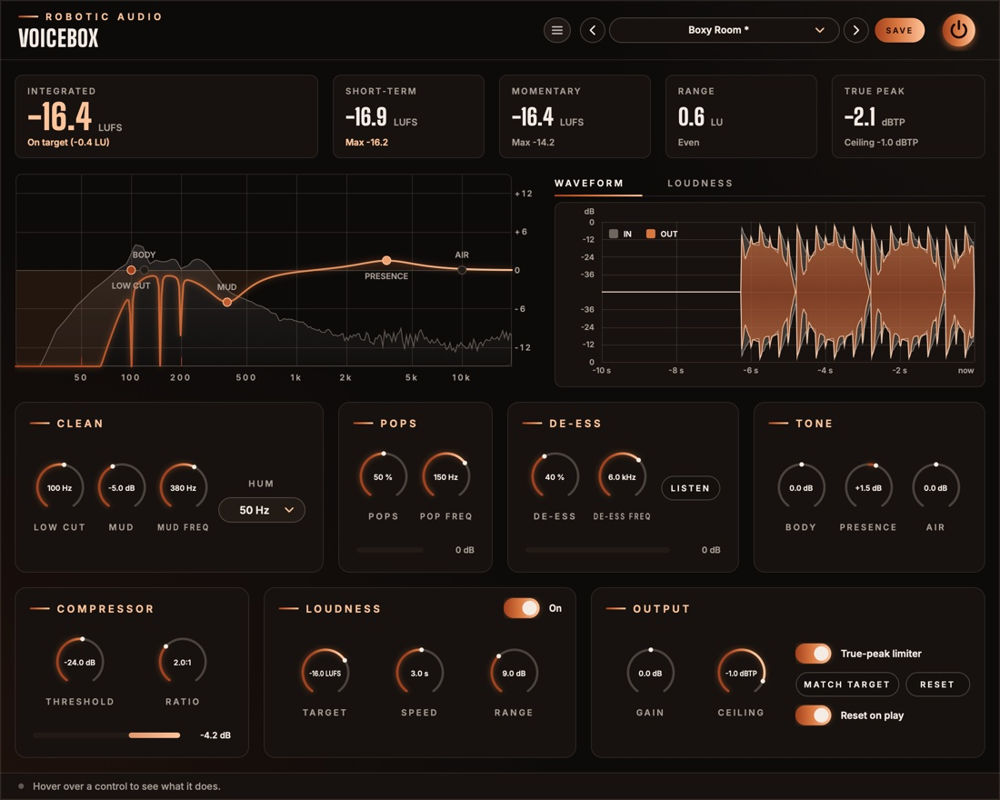

Voicebox
A voice's whole finishing chain in one plugin, for podcasts and speech buses. It takes out rumble, hum and mud, removes plosives and sibilance, shapes the tone, compresses gently, then rides the level onto your loudness target and keeps the true peaks under the ceiling, measuring everything the way the podcast platforms and broadcasters do.
- Low cut, hum notches, mud dip
- Plosive remover
- Relative de-esser with Listen
- Body, Presence, Air
- Gentle compressor
- Before/after waveform
- EBU R128 metering
- Auto Level onto a target
- True-peak limiter
- 18 presets
- AU · VST3 · Standalone

Quick start
From a raw recording to a voice that meets the spec.
Put it on the voice
Insert Voicebox on a voice track, a speech bus, or the master of a speech-only podcast. Put it last if it's the only thing between the voice and the file, since it limits the true peaks.
Pick the standard
Choose a preset for where it's going: Podcast Stereo -16 LUFS, Podcast Mono -19 LUFS, Spotify / YouTube -14 LUFS and so on. Default already aims at −16 LUFS with Auto Level on.
Clean it up
Play a stretch of speech. Raise Low Cut until the rumble is gone but the voice keeps its weight. If you hear a steady drone, set Hum to 50 or 60 Hz. If the voice sounds boxy, turn up Mud and sweep Mud Freq.
Pops and esses
Listen for thumps on P and B, and sharp S sounds. Turn Pops and De-ess up until they're gone. The bars under the knobs show what each one is taking out.
Tone and compression
Shape the voice with Body, Presence and Air. Set Threshold so the compressor's bar flickers by 2–4 dB while someone speaks.
Check the loudness
Play it through. Integrated should read on target (in the accent colour), and True peak should stay under the ceiling. For an exact landing, press MATCH TARGET and play it through again.
The window
Numbers on top, pictures in the middle, the chain below.
- Header
- The preset bar (previous, next, the list, SAVE), the power button (bypass) and the menu (three lines) with this manual. Click the logo for the version and credits.
- Readouts
- Integrated (wide), Short-term, Momentary, Range and True peak, all measuring the output. See The readouts & graph.
- EQ display
- The clean-up and tone curve over the output's spectrum, with handles you can drag. See The EQ display.
- WAVEFORM · LOUDNESS
- Two tabs over the right-hand panel. WAVEFORM shows the last 10 seconds coming in and going out on top of each other (see The waveform); LOUDNESS shows the last 60 seconds of loudness round the target, with Auto Level's gain and the limiter's reduction in a strip under it. Voicebox remembers the tab while its window is closed.
- First row
- Clean, Pops, De-ess and Tone: the voice's processing, in the order the sound passes through.
- Second row
- Compressor, Loudness (with the Auto Level switch in its title) and Output.
- Reduction bars
- Along the bottom of Pops, De-ess and Compressor: how far that stage is turning the sound down right now, growing from the right, with the figure in dB.
- Tooltip strip
- Along the bottom: what the control under the mouse does.
Signal flow
Clean, de-pop, shape, de-ess, compress, then level and limit.
The voice runs through the five processing stages first, both channels linked, so the two sides are always treated alike. The loudness stage then measures what comes out of them every 100 ms, and Auto Level sets its gain from that. Gain is added next, the limiter keeps the true peaks under the Ceiling, and the readouts and graph measure the very end: what your listeners will hear.
Tone comes before the de-esser, so a lift in Presence or Air can't bring the esses back. The compressor comes after, so it isn't pushed around by thumps and hiss that have already been taken out.
The limiter looks 2 ms ahead, so the audio is delayed by that much (plus a few samples), on or off. The host is told and compensates. While silence comes in, the processing stages rest and cost next to nothing.
The EQ display
The clean-up and tone curve, drawn over what's coming out.
The curve is the response of every filter in Clean and Tone together, drawn over a live spectrum of the output. It runs from 20 Hz to 20 kHz, with ±15 dB of scale. When Hum is on, small red marks along the bottom show where its notches sit.
- LOW CUT
- Drag sideways to set Low Cut.
- MUD
- Drag anywhere: sideways sets Mud Freq, down sets how deep Mud cuts.
- BODY · PRESENCE · AIR
- Drag up or down to boost or cut. Each sits at its fixed frequency: 120 Hz, 3.5 kHz and 10 kHz.
While you hover or drag, a handle shows its name and value. Double-click a handle to reset it. Scroll over it to nudge it: the gain if it has one, otherwise the frequency. Gains catch at 0 dB, so a handle is easy to put back. A lit handle is doing something; a dark one is flat (or, for Low Cut, at its lowest).
The waveform
What came in and what went out, on top of each other.
The WAVEFORM tab draws the last 10 seconds twice on the same scale: what comes into Voicebox as a grey silhouette, and what goes out, after everything including Auto Level, Gain and the limiter, in colour on top. Now is on the right. The scale is in decibels, mirrored round the centre line, from 0 dB at the edges down to −48 dB at the centre, so quiet speech and pauses are as easy to read as the peaks.
- Grey over the colour
- What Voicebox took away: a plosive's thump, an S, a peak the compressor or the limiter held down, or Auto Level turning a loud passage down.
- Colour over the grey
- What it added: Auto Level or Gain bringing a quiet voice up. The input's outline is drawn on top in a light line, so you can see its edge here too.
- The two together
- Words that came in at different heights and go out at the same height are the leveller and the compressor doing their job. Pauses that stay low show that silence isn't being pulled up.
It redraws only while audio arrives, and stops while everything on show is silent.
Clean
Take out what doesn't belong in a voice.
- Low Cut
- Removes rumble, handling noise, traffic and air conditioning under this frequency, at 24 dB per octave. 70–100 Hz suits most voices; go higher for a thin voice or a noisy room, lower for a deep voice. At 20 Hz it does next to nothing. 20 Hz … 300 Hz
- Hum
- Notches out mains hum: 50 Hz in Europe and most of the world, 60 Hz in the Americas. Each notch is narrow and also removes the hum's first three harmonics (100, 150 and 200 Hz, or 120, 180 and 240 Hz), so the voice around them is left alone. Off · 50 Hz · 60 Hz
- Mud
- Dips the boxy, muddy band that small rooms and close mics pile up. 0 … −12 dB
- Mud Freq
- Where the mud sits. Turn Mud up high, sweep Mud Freq until the voice sounds most boxy, then bring Mud back down until it just clears. 150 Hz … 800 Hz
Pops
Plosives out, the voice's weight kept.
A plosive is the puff of air from a P or B hitting the mic: a burst of low end with little else in it. Voicebox splits off the band under Pop Freq and turns it down the moment it bursts well above the voice in the band over it, then lets it back within about 50 ms. The rest of the voice isn't touched, and neither is the low band while it's just the voice's own warmth.
- Pops
- How readily it acts. At low settings, only a thump far louder than the voice is caught; at 100 % the low band is held down whenever it rises above the voice at all. It never takes more than 24 dB off the low band, and ignores the low band while it's under −50 dBFS. 0 % turns it off. 0 … 100 %
- Pop Freq
- The top of the band the thumps live in. Raise it for thumps that sound more like a knock than a rumble; lower it if a deep voice loses weight. 60 Hz … 250 Hz
The bar along the bottom shows how far the low band is turned down right now, up to 24 dB. On plain speech it should rest at 0 dB and flick out on the plosives.
De-ess
Sharp esses tamed, whether the voice is quiet or loud.
Everything above De-ess Freq is treated as sibilance. Voicebox listens to how large a share of the whole voice that band takes, and turns only that band down while the share is too large. Because it listens to the share, not the level, it catches an S the same in a whisper as in a shout, and a level change earlier in the chain doesn't throw it off.
- De-ess
- How much. Higher catches milder sibilance and cuts deeper: from 3 dB at most near 0 % to 18 dB at 100 %. Below −54 dBFS (room noise between words) it does nothing. 0 % turns it off. 0 … 100 %
- De-ess Freq
- The bottom of the sibilant band. Lower it for a dull, lisping S; raise it for a whistling one. 3 kHz … 10 kHz
- LISTEN
- Plays only what the de-esser removes. Use it to tune the two knobs: you should hear the esses and little else. Listen is never saved in a preset and turns off when a session loads, but remember to turn it off yourself before you bounce.
The bar along the bottom shows how far the sibilant band is turned down right now, up to 18 dB.
Tone
Three broad strokes at the frequencies voices need.
- Body
- Warmth and weight: a shelf under 120 Hz. Up for a thin voice or a phone-like recording, down for a boomy one. −12 … +12 dB
- Presence
- Clarity and intelligibility: a broad bell at 3.5 kHz. Up to cut through music or a busy mix, down for a harsh voice. −12 … +12 dB
- Air
- Openness and breath: a shelf over 10 kHz. −12 … +12 dB
Compressor
A gentle hand on the dynamics within each phrase.
The compressor evens out the words within a sentence; Auto Level, after it, evens out the sentences and the speakers. It listens to the average level, not the peaks, with a soft 10 dB knee, a 12 ms attack and a 150 ms release, so it stays transparent on speech. It has no make-up gain: the loudness stage after it brings the level back up.
- Threshold
- The level it starts working at. Set it so the bar flickers by 2–4 dB while someone speaks. It depends on how loud the recording is, so set it again for a much quieter or louder source. −50 … 0 dB
- Ratio
- How firmly it holds the voice above the threshold. 2:1 is a light touch; 1:1 turns it off. 1:1 … 4:1
The bar along the bottom shows how far it is turning the voice down right now, up to 12 dB.
Loudness
An engineer on the fader, aiming at the target.
- Target
- The integrated loudness to aim for: Apple Podcasts −16, Spotify and YouTube −14, mono podcasts −19, audiobooks −20, EBU R128 broadcast −23 LUFS. Auto Level, MATCH TARGET, the readouts and the graph all work towards it. −30 … −10 LUFS
- Auto Level
- The On pill in the card's title, on by default. It measures the voice's momentary loudness every 100 ms, keeps a slow average of it and sets the gain that brings that average to the target. A soft speaker comes up, a loud one goes down. Its gain glides between steps, so it never clicks. Off, its gain glides back to 0 dB and Speed and Range grey out.
- Speed
- How many seconds Auto Level listens back before it moves. Short follows every phrase; long only rides big changes, like a new speaker. It turns down four times faster than it turns up, as a compressor would. 0.5 … 10 s
- Range
- The most Auto Level may turn up or down. 1 … 24 dB
Output
Trim, limit and measure.
- Gain
- Added after Auto Level, before the limiter. MATCH TARGET sets it for you. −24 … +24 dB
- Ceiling
- The highest true peak allowed out. −1 dBTP suits most platforms; audiobooks often ask for −3. −9 … 0 dBTP
- True-peak limiter
- Keeps peaks, between samples too, under the Ceiling. It looks 2 ms ahead, so the gain is already down when a peak arrives, and recovers smoothly. Off, the audio is still delayed by the same amount, so switching it never moves the timing.
- MATCH TARGET
- Sets Gain so the integrated loudness lands on the target, then starts the measurement over. It needs a measurement first: play the whole episode, or a typical stretch of it.
- RESET
- Starts the integrated, range and peak measurements over.
- Reset on play
- Starts the measurement over whenever the host starts playing, so a bounce or a take is measured from its start.
The readouts & graph
Five numbers and the last minute, all measuring the output.
- Integrated
- The loudness of everything since the last reset, gated as EBU R128 does it, so silence and pauses don't pull it down. This is the number delivery specs talk about. Under it, you see whether you're on target (within 1 LU) or how many LU too loud or too quiet. Its colour says the same: the accent on target, red too loud, blue too quiet.
- Short-term
- The loudness of the last 3 seconds, and the highest it has been since the reset.
- Momentary
- The loudness of the last 400 ms, and its highest.
- Range
- How much the loudness varies (LRA, EBU Tech 3342), once there are 3 seconds or more to judge. Speech usually sits between 3 and 8 LU. Under it you see Even, Dynamic (over 6 LU) or Very dynamic (over 10 LU).
- True peak
- The highest peak since the reset, between samples too, as a decoder will see it. It turns red when it has gone over the ceiling.
The graph
Time runs from right (now) to left (a minute ago). The scale is centred on the target, 12 LU above it and 24 below, with the target drawn as a band. The filled area is the momentary loudness and the bright line the short-term. In the strip underneath, the green line is Auto Level's gain (LEVELLER) and red bars are the limiter's reduction (LIMITER). Frequent red bars mean the limiter is working hard: lower Gain or the Target.
Presets
Delivery standards first, then voices that need more of one thing.
| Preset | What it changes from Default |
|---|---|
| Default | −16 LUFS, Auto Level on (3 s, ±9 dB), Low Cut 80 Hz, Pops 50 %, De-ess 40 %, compressor −24 dB at 2:1 |
| Podcast Stereo -16 LUFS | Target −16 LUFS |
| Podcast Mono -19 LUFS | Target −19 LUFS |
| Spotify / YouTube -14 LUFS | Target −14 LUFS |
| Audiobook -20 LUFS | Target −20 LUFS, Ceiling −3 dBTP, a slower, narrower Auto Level (5 s, ±6 dB) |
| Broadcast EBU R128 -23 LUFS | Target −23 LUFS |
| Speech Bus | −18 LUFS, a quick Auto Level (1.5 s, ±12 dB), lighter pops, de-essing and compression |
| Interview, Two Mics | A fast, wide Auto Level (1 s, ±18 dB) to even out two speakers, Low Cut 100 Hz, a little Mud |
| Close Mic, Plosives | Pops 85 % up to 180 Hz, Low Cut 90 Hz, a touch less Body |
| Sharp Sibilance | De-ess 75 % from 5.5 kHz, a touch less Air |
| Boxy Room | Mud −5 dB at 380 Hz, a little Presence, Low Cut 100 Hz |
| Warm Voice | More Body, a little Presence, less Air, Low Cut 60 Hz |
| Bright Voice | Less Body, more Presence and Air, more de-essing to match |
| Phone-Thin Fix | Body +4 dB, less Presence, Low Cut 40 Hz |
| Hum 50 Hz (EU) | Hum 50 Hz |
| Hum 60 Hz (US) | Hum 60 Hz |
| Gentle Touch | Less of everything: Pops 30 %, De-ess 25 %, ratio 1.5:1, a slow Auto Level (6 s, ±6 dB) |
| Meter Only | All processing and the limiter off: Voicebox only measures (and delays by its lookahead) |
Press SAVE in the header to keep your own. The preset menu has Save As, Delete and Open Folder. An asterisk after the preset's name means you've changed something since loading it. Every control is a host parameter and can be automated.
Recipes
Starting points for common jobs.
Default on the voice. Clean it up, play the whole episode, press MATCH TARGET, play it again to check, bounce.
One Voicebox per mic, each with its own clean-up, pops and esses, and Auto Level on to even out the two voices. Or Interview, Two Mics on a bus of both.
Voicebox on the voice bus with Speech Bus, and a little more Presence so the words cut through. Put a loudness meter on the master for the final figure.
Low Cut 100 Hz against desk thumps, Mud at about 300 Hz, Pops up if the mic is close. If you hear a drone, try Hum.
Audiobook -20 LUFS or Gentle Touch: they even out the slow drift of a long read without flattening its expression.
Meter Only, then turn on just what's missing, such as Auto Level and the limiter for the final loudness.
Specifications
The numbers.
| Property | Value |
|---|---|
| Low cut | 24 dB/octave (Butterworth), 20–300 Hz |
| Hum | Narrow notches at 50 or 60 Hz and the next three harmonics |
| Mud | Bell cut, 0–12 dB, 150–800 Hz |
| Pops | Split-band, low band 60–250 Hz, at most 24 dB of reduction, about 50 ms recovery |
| De-ess | Split-band, relative to the whole voice, 3–10 kHz, at most 3–18 dB of reduction |
| Tone | Body shelf at 120 Hz, Presence bell at 3.5 kHz, Air shelf at 10 kHz, ±12 dB each |
| Compressor | Average-level detection, 10 dB soft knee, 12 ms attack, 150 ms release, ratio 1:1–4:1, stereo-linked, no make-up gain |
| Metering | ITU-R BS.1770 K-weighting; momentary 400 ms, short-term 3 s; integrated gated at −70 LUFS absolute and −10 LU relative (EBU R128); loudness range per EBU Tech 3342; 4× true-peak estimate |
| Auto Level | Steps every 100 ms; Speed 0.5–10 s (four times faster down than up); Range ±1–24 dB; holds under −50 LUFS |
| Limiter | True-peak, 2 ms lookahead, stereo-linked |
| Latency | 2 ms plus 16 samples, on or off, reported to the host |
| Waveform | The last 10 seconds before and after, peaks on a dB scale from 0 to −48 dB |
| CPU | The processing rests while silence comes in and the meters rest on digital silence; the window redraws only what changes |
| Channels | Stereo (mono tracks work too), both channels processed alike |
| Formats | AU, VST3, Standalone |